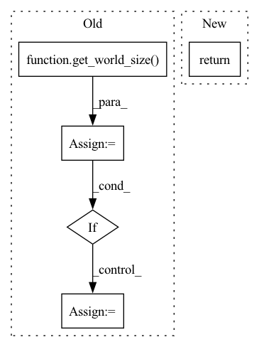

Pattern ID :14311
Before Change
device = torch.device("cuda" if backend == "nccl" else "cpu")
if backend == "nccl":
world_size = get_world_size()
total_size = len(bytearray(nncore.dumps(data))) * world_size
pynvml.nvmlInit()
for i in range(world_size):
handle = pynvml.nvmlDeviceGetHandleByIndex(i)
meminfo = pynvml.nvmlDeviceGetMemoryInfo(handle)
if meminfo.free < total_size:
group = dist.new_group(backend="gloo")
device = "cpu"
break
buffer = nncore.dumps(data)After Change
storage = torch.ByteStorage.from_buffer(buffer)
data_tensor = torch.ByteTensor(storage, device=device)
size_tensor = torch.LongTensor([data_tensor.numel()], device=device)
return data_tensor, size_tensor
def _pad_tensor(data_tensor, pad_size):In pattern: SUPERPATTERN
Frequency: 3
Non-data size: 5
Instances Fragment ID: 47384467
Project Name: yeliudev/nncore
Commit Name: 7b1c1711f2805cd55f6fdd396743454017170d76
Time: 2021-04-28
Author: yeliudev@outlook.com
File Name: nncore/engine/comm.py
M Class Name: AnonimousClass
N Class Name: AnonimousClass
M Method Name: _serialize_to_tensor(2)
N Method Name: _serialize_to_tensor(2)
M Parent Class:
N Parent Class:
M File Name: nncore/engine/comm.py
N File Name: nncore/engine/comm.py
M Start Line: 38
M End Line: 59
N Start Line: 43
N End Line: 46
Before Change
Returns:
collected (list[data]): a list of data gathered from each rank
world_size = get_world_size()
total_size = len(bytearray(nncore.dumps(data))) * world_size
pynvml.nvmlInit()
matched = False
for i in range(world_size):
handle = pynvml.nvmlDeviceGetHandleByIndex(i)
meminfo = pynvml.nvmlDeviceGetMemoryInfo(handle)
if meminfo.free < total_size:
matched = True
break
if matched:After Change
buffer = tensor.cpu().numpy().tobytes()[:size]
gathered.append(nncore.loads(buffer))
return gathered
def gather(data, dst=0, group=dist.group.WORLD): Fragment ID: 47384473
Project Name: yeliudev/nncore
Commit Name: c60692996f4316b5befe701efbc18a9ad7cc7ac1
Time: 2020-03-11
Author: goolhanrry@gmail.com
File Name: nncore/engine/comm.py
M Class Name: AnonimousClass
N Class Name: AnonimousClass
M Method Name: all_gather(2)
N Method Name: all_gather(1)
M Parent Class:
N Parent Class:
M File Name: nncore/engine/comm.py
N File Name: nncore/engine/comm.py
M Start Line: 47
M End Line: 78
N Start Line: 86
N End Line: 112
Before Change
@staticmethod
def forward(ctx: Any, group: dist.ProcessGroup, input: Tensor):
ctx.group = group
world_size = get_world_size( group)
if world_size <= 1:
return input
input = input.contiguous()
output = torch.empty_like(input)
if AllToAllStatus.algo:
AllToAllStatus.init(group, 1, -1, input)After Change
@staticmethod
def forward(ctx: Any, group: dist.ProcessGroup, input: Tensor):
ctx.group = group
return all_to_all_single(input, group)
@staticmethod
def backward(ctx: Any, grad_output: Tensor): Fragment ID: 47384478
Project Name: microsoft/tutel
Commit Name: f9ca1a9820bbcb75873b8759e70cacaf0a4a8ba4
Time: 2022-02-18
Author: ghostplant@qq.com
File Name: tutel/impls/communicate.py
M Class Name: AllToAll
N Class Name: AllToAll
M Method Name: forward(3)
N Method Name: forward(3)
M Parent Class: torch.autograd.Function
N Parent Class: torch.autograd.Function
M File Name: tutel/impls/communicate.py
N File Name: tutel/impls/communicate.py
M Start Line: 158
M End Line: 168
N Start Line: 172
N End Line: 172